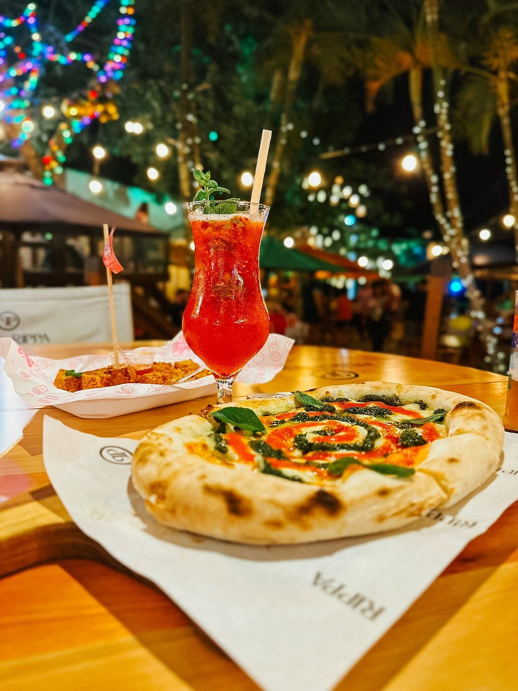
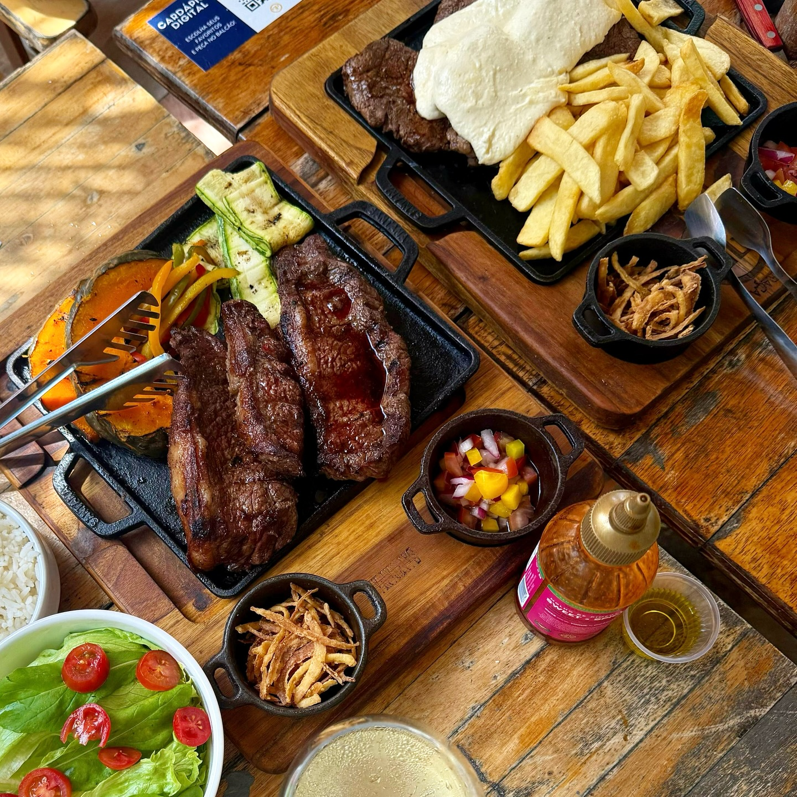
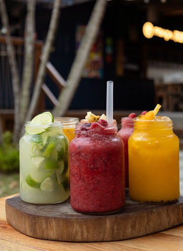
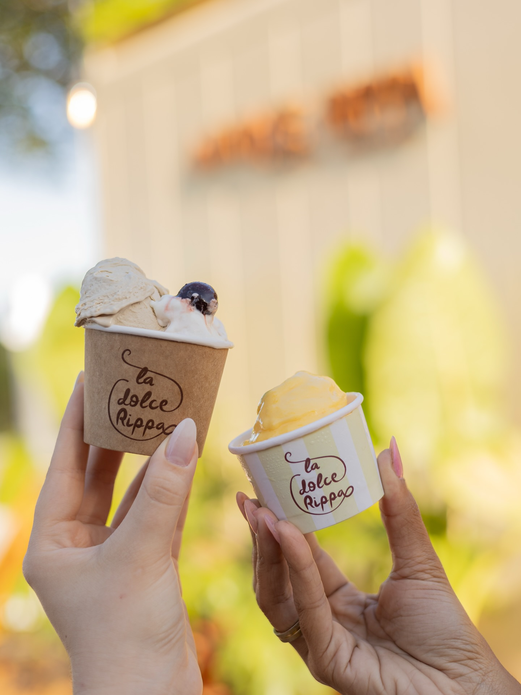
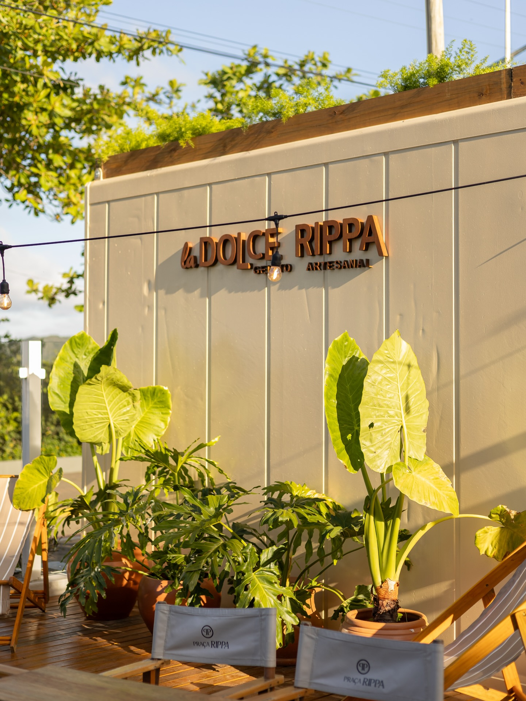
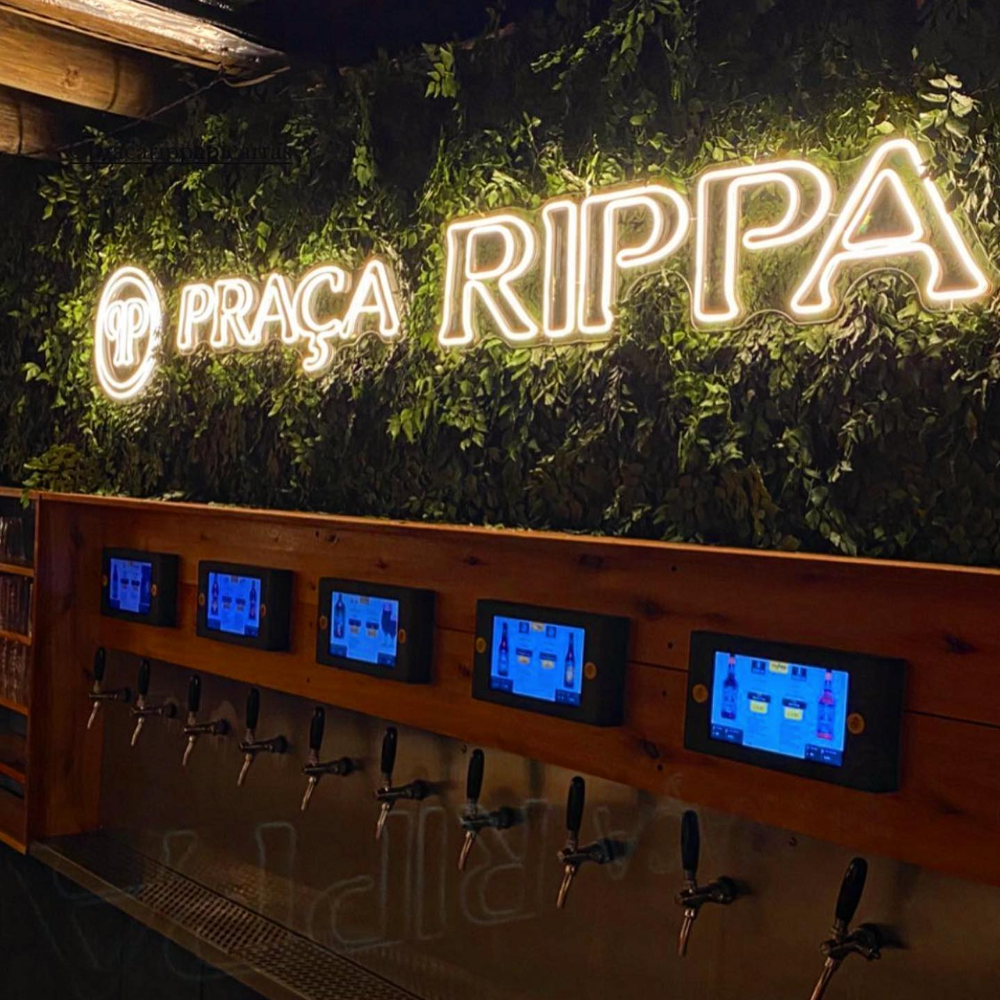
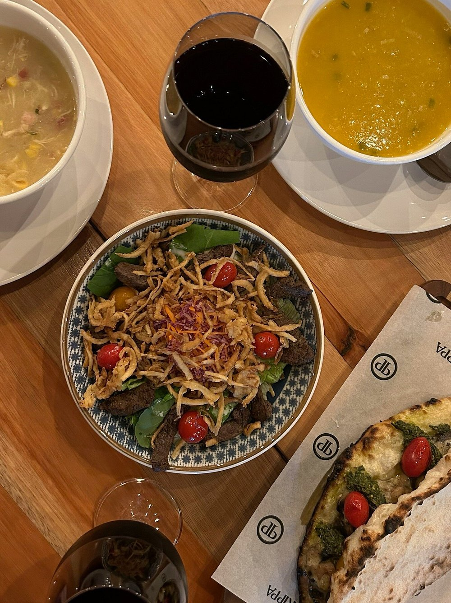
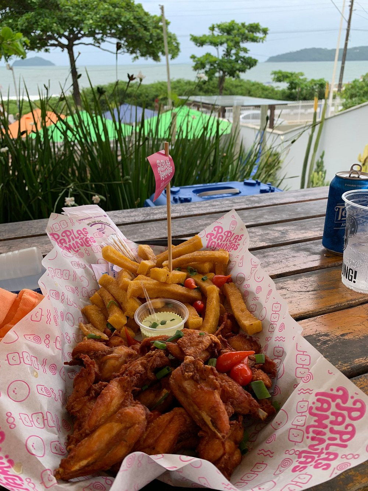
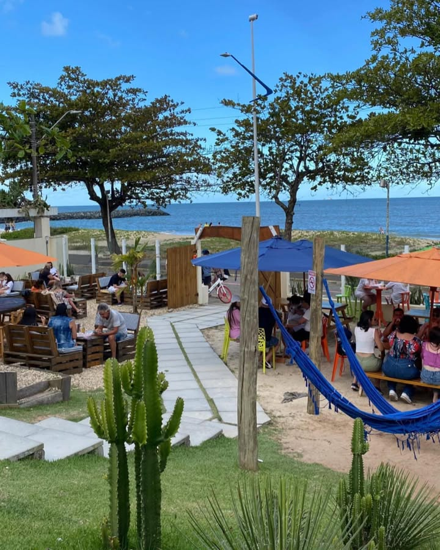

Praça Rippa
Praça Rippa.
Comer bem.
Ficar mais um pouco.
Pôr do sol, boa comida e encontros de frente para o mar — um lugar para chegar e ficar mais um pouco.
Quando o sol se põe, a praça ganha outro ritmo
A tarde começa leve, com o mar por perto e a mesa virada para a paisagem. Quando as luzes acendem, a praça ganha outro ritmo — e o encontro continua.
Atmosfera geral da casa — dias e horários exatos de música podem variar; confirme com a casa.
O que dá vontade?
Da primeira mordida ao último drink: escolha o que combina com o seu momento e deixe a mesa fazer o resto.

PizzasForno, massa e vontade de pedir mais uma.Ver no cardápio ↗
Brasa & petiscosPara dividir, beliscar e ficar mais um pouco.Ver no cardápio ↗
Drinks & choppGelados para acompanhar a brisa do mar.Ver no cardápio ↗
Gelato da casaUm final doce com a cara da Praça.Ver no cardápio ↗Do deque de madeira às pizzas saindo do forno
Um pouco daquilo que faz a Praça Rippa ser reconhecível: o deque de madeira, a vista, a comida chegando à mesa e o movimento das noites em Piçarras.





Fogo, brasa & sabor de praia
Da brasa aos drinks, a ideia é simples: escolher o que dá vontade, pedir para a mesa e aproveitar sem pressa.
Entre food trucks e cozinha própria, você encontra pizzas, carnes na brasa, hambúrgueres, porções, drinks e uma gelateria para fechar a noite com algo doce.
Pizzas & fornos
Um dos destaques mais citados nas avaliações.
Petiscos & carnes na brasa
Porções, hambúrgueres e churrasco dos food trucks.
Drinks & caipirinhas
Caipirinhas de frutas e coquetéis de frente pro mar.
Gelateria La Dolce Rippa
Sorvete artesanal feito e servido dentro do próprio espaço.
Quem passa por aqui, conta
Mais do que notas, são pequenos recortes da experiência de quem sentou, comeu, brindou e aproveitou a vista.
“Local muito lindo, comida boa e preço justo para essa experiência ótima!”
“Ambiente super agradável e atendimento personalizado. Comidas e bebidas bem servidas, recomendo!”
“Tudo perfeito! Qualidade, atendimento e ambiente excelentes e diferenciados. Local muito agradável!”
Avaliações reais compartilhadas por clientes da Praça Rippa no Google.
Seu próximo encontro pode começar aqui.
Mar, comida, drinks e espaço para ficar mais um pouco. Escolha seu momento e venha viver a Praça Rippa.